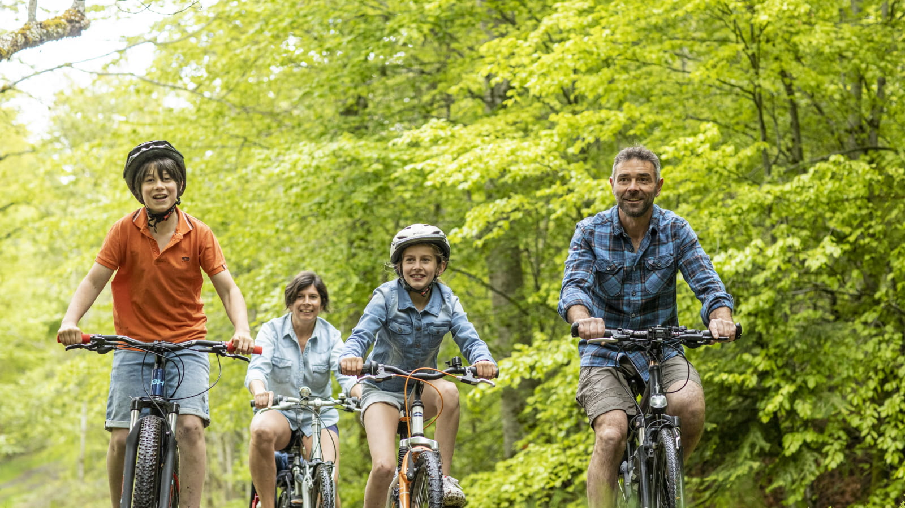

Les loisirs en plein air permettent de profiter de la nature tout en restant actif. Ils incluent une variété d'activités qui peuvent être pratiquées dans des environnements naturels et offrent des bénéfices pour la santé physique et mentale.
| Activité | Équipement Nécessaire | Conseils de Sécurité |
|---|---|---|
| Randonnée | Bottes de randonnée, sac à dos, bâtons de marche | Vérifiez les prévisions météorologiques, restez sur les sentiers balisés |
| Camping | Tente, sac de couchage, matériel de cuisson | Assurez-vous d'éteindre le feu, respectez les règles du camping |
| Vélo de montage | Casque, gants, vélo adapté | Vérifiez l'état du vélo avant chaque sortie, portez des vétements réfléchissants |
| Kayak | Gilet de sauvetage, pagaie, kayak | Connaissez les conditions de l'eau, restez en groupe si possible |
Pour plus d'informations sur les sports olympiques, retournez à la page N2 ou consultez la page N1.